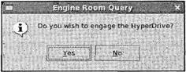

|
||||||||||||||||||||||||||||||||||||||||||||||||||||||
|
|
Глава 17Программирование в KDE с помощью Qt В главе 16 вы познакомились с библиотеками GUI графической среды GNOME/GTK+, предназначенными для создания пользовательского графического интерфейса под управлением системы X. Эти библиотеки — лишь половина истории, другой крупный игрок на поле GUI в системе Linux — графическая среда KDE/Qt, и в этой главе мы рассмотрим ее библиотеки и увидим, как они развиваются в условиях конкуренции. Комплект инструментальных средств Qt написан на языке С++, стандартный язык для написания приложений Qt/KDE, поэтому в данной главе вам придется отойти от обычного языка С и испачкать свои руки С++. Возможно, вы воспользуетесь этой возможностью и освежите свои знания языка С++, вспомнив прежде всего принципы наследования и инкапсуляции, метод переопределения и виртуальные функции. В этой главе мы обсудим следующие темы: □ знакомство с комплектом инструментов Qt; □ установка Qt; □ практическое применение; □ механизм "сигнал/слот"; □ виджеты Qt; □ диалоговые окна; □ создание меню и панелей инструментов с помощью KDE; □ разработка средствами KDE/Qt вашего приложения для работы с базой данных компакт-дисков. Введение в KDE и QtKDE (Desktop Environment, K-среда рабочего стола) — графическая среда рабочего стола с открытым программным кодом, основанная на библиотеке графического пользовательского интерфейса Qt. В состав KDE входит множество приложений и утилит, включая полный офисный пакет, Web-обозреватель и даже полнофункциональную IDE (интегрированная среда разработки) для программирования приложений KDE/Qt (KDevelop обсуждалась в главе 9). Профессиональное признание функциональных возможностей развитых приложений KDE пришло, когда компания Apple выбрала Web-обозреватель KDE в качестве ядра основного Web-обозревателя для системы Mac OS X, названного Safari и известного как очень быстрый обозреватель. Главная страница проекта KDE находится по адресу http://www.kde.org, на ней вы найдете подробные сведения, файлы загрузки среды KDE и ее приложения, документацию, сможете присоединиться к списку адресатов файлов рассылок и получить другую информацию для разработчиков. Примечание С точки зрения программиста, KDE предлагает десятки виджетов KDE, обычно унаследованных от их аналогов Qt, но улучшенных и облегчающих использование. Виджеты KDE обеспечивают более тесную связь с рабочим столом KDE, чем сам по себе комплект инструментов Qt; у вас появляется, например, возможность управления сеансами. Qt — тщательно продуманный межплатформный комплект инструментов GUI, написанный на языке С++. Это детище норвежской компании Trolltech, разрабатывающей, продающей и осуществляющей техническую поддержку Qt и сопутствующего программного обеспечения для промышленного рынка. Trolltech во всеуслышание рекламирует межплатформные возможности комплекта Qt, которые бесспорно впечатляющи, Qt поддерживается в ОС Linux и модификациях UNIX, Windows, Mac OS X и даже на встроенных платформах, явно отдающих предпочтение комплекту Qt по сравнению с его конкурентами. Примечание В настоящее время компания Trolltech продает коммерческие версии Qt случайным пользователям и любителям по завышенным ценам. К счастью, Trolltech понимает важность бесплатной версии для сообщества, распространяющего свободное программное обеспечение, и предлагает свободно распространяемую версию Qt Open Source Edition для. ОС Linux, Windows и Mac OS X. В ответ Trolltech получает большую базу пользовательских установок, обширное сообщество программистов и высокое реноме своего продукта. Qt Open Source Edition распространяется на условиях лицензии GPL, т.е. вы можете программировать, используя библиотеки-Qt, и распространять бесплатно собственное программное обеспечение, отвечающее требованиям лицензии GPL. Насколько мы можем судить, у свободно распространяемой версии есть два основных отличия от коммерческих версий: отсутствие технической поддержки и запрет на применение программного обеспечения Qt в коммерческих приложениях. Вся необходимая вам документация по API есть на Web-сайте Trolltech по адресу http://www.trolltech.com. Установка QtЕсли у вас нет особых причин для компиляции из исходного программного кода, самый простой путь — найти для вашего дистрибутива двоичный пакет или пакет RPM. Дистрибутив Fedora Linux 7 поставляется с пакетом qt-3.3.8-4.i386.rpm, который можно установить с помощью следующей команды. $ rpm -Uvh qt-3.3.3-4.i386.rpm Комплект Qt и библиотеки программирования KDE можно также установить с помощью приложения Package Manager (Диспетчер пакетов) — рис. 17.1. Рис. 17.1 Если вы хотите загрузить из Интернета исходный программный код и сформировать Qt самостоятельно, самый свежий программный код можно получить с FTP-сайта Trolltech по адресу ftp://ftp.trolltech.com/qt/source/. Пакет исходного программного кода приходит с подробнейшими инструкциями, касающимися компиляции и установки Qt и хранящимися в файле INSTALL, упакованном программой tar. $ сd /usr/local $ tar -xvzf qt-x11-free-3.3.8.tar.gz $ ./configure $ make Также следует добавить в файл /etc/ld.so.conf следующую строку: /usr/lib/qt-3.3/lib Вставить ее можно в любое место файла. Примечание Если комплект Qt установлен корректно, переменная окружения QTDIRбудет содержать каталог установки. Проверить это можно следующим образом: $ echo $QTDIR /usr/lib/qt-3.3 Убедитесь также в том, что каталог lib добавлен в файл /etc/ld.so.conf. Затем выполните как суперпользователь следующую команду: # ldconfig Испытайте простейшую программу с применением Qt и убедитесь в том, что ваша установка функционирует должным образом (упражнение 17.1). Упражнение 17.1. ОкноQMain Введите (или скопируйте и вставьте программный код из загруженного файла) приведенную далее программу и назовите ее qt1.cpp: #include <qapplication.h> #include <qmainwindow.h> int main(int argc, char **argv) { QApplication app(argc, argv); QMainWindow* window = new QMainWindow(); app.setMainWidget(window); window->show(); return app.exec(); } При компиляции вам необходимо указать Qt-каталоги include и lib: $ g++ -о qt1 qt1.cpp -I$QTDIR/include -L$QTDIR/lib -lqui Примечание Выполнив приложение, вы должны получить окно Qt (рис. 17.2). $ ./qtl Рис. 17.2 Как это работает В отличие от GTK+ здесь нет вмещающего в себя все заголовочного файла qt.h, поэтому вы должны явно включать заголовочные файлы всех используемых объектов. Первый объект, с которым вы встречаетесь, — QApplication. Это главный объект Qt, который вы должны сформировать, передав ему в самом начале аргументы командной строки. У каждого приложения Qt должен быть один и только один объект типа QApplication, который вы должны создать перед тем, как делать что-то еще. QApplicationимеет дело с внутренними встроенными операциями Qt, такими как обработка событий, размещение строк и управление внешним представлением. Вы будете применять два метода QApplication: setMainWidget, который создает главный виджет вашего приложения, и exec, который запускает выполнение цикла отслеживания событий. Метод exec не возвращает управление до тех пор, пока либо не будет вызван метод QApplication::quit(), либо не будет закрыт главный виджет. QMainWindow— базовый виджет окна в Qt, который поддерживает меню, панель инструментов и строку состояния. Он будет играть важную роль в этой главе, по мере того, как вы научитесь расширять его возможности и вставлять в него виджеты, формирующие интерфейс. Далее мы обсудим механизм программирования, управляемого событиями, и вы вставите в приложение виджет PushButton. Сигналы и слотыКак вы видели в главе 16, сигналы и их обработка — главные механизмы, используемые приложениями GUI для реагирования на ввод пользователя, и ключевые функции библиотек GUI. Механизм обработки сигналов комплекта Qt состоит из сигналов и слотов или приемников, называемых сигналами и функциями обратного вызова в комплекте инструментов GTK+ или событиями и обработчиками событий в языке программирования Java. Примечание Вот как устроено программирование, управляемое событиями: графический интерфейс пользователя состоит из меню, панелей инструментов, кнопок, полей ввода и множества других элементов GUI, называемых виджетами. Когда пользователь взаимодействует с виджетом, например, активизирует пункт меню или вводит какой-то текст в поле ввода, виджет порождает именованный сигнал, такой как clicked, text_changedили key_pressed. Как правило, вам захочется сделать что-то в ответ на действие пользователя, например, сохранить документ или выйти из приложения, и вы выполняете это, связав сигнал с функцией обратного вызова или слотом на языке Qt. Применение сигналов и слотов довольно специфично — Qt определяет два новых соответствующим образом описанных псевдоключевых слова, signalsи slotsдля обозначения в вашем программном коде классов сигналов и слотов. Это замечательно с точки зрения читаемости и сопровождения программного кода, но вы вынуждены пропускать свой код через отдельный этап препроцессорной обработки для поиска и замены этих псевдоключевых слов дополнительным кодом на языке С++. Примечание На способы применения сигналов и слотов в Qt есть несколько ограничений, но они не слишком существенные: □ сигналы и слоты должны быть функциями-методами класса-потомка QObject; □ при использовании множественного наследования QObjectдолжен быть первым в списке класса; □ оператор Q_OBJECTдолжен появляться первым в объявлении класса; □ сигналы нельзя применять в шаблонах; □ указатели на функцию не могут использоваться как аргументы в сигналах и слотах; □ сигналы и слоты не могут переопределяться или обновляться до статуса public(общедоступный). Поскольку вы должны писать ваши сигналы и слоты как потомков объекта QObject, логично создавать ваш интерфейс, расширяя и настраивая виджет, начиная с QWidget, базового виджета Qt, потомка виджета QObject. В комплекте Qt вы почти всегда будете создавать интерфейсы, расширяя такие виджеты, как QMainWindow. Типичное определение класса в файле MyWindow.h для вашего GUI будет напоминать приведенное далее: class MyWindow : public QMainWindow { Q_OBJECT public: MyWindow(); virtual ~MyWindow(); signals: void aSignal(); private slots: void doSomething(); } Ваш класс — наследник объекта QMainWindow, который определяет функциональные возможности главного окна в приложении. Аналогичным образом при создании диалогового окна вы определите подкласс QDialog. Первым указан оператор Q_OBJECT, действующий как метка для препроцессора, за которым следуют обычные объявления конструктора и деструктора. Далее даны определения сигнала и слота. У вас есть один сигнал и один слот, оба без параметров. Для порождения сигнала aSignal()вам нужно всего лишь в любом месте программы вызвать функцию emit: emit aSignal(); Это означает, что все остальное обрабатывается Qt. Вам даже не потребуется реализация aSignal(). Для применения слотов их нужно связать с сигналом. Делается это соответствующим образом с помощью названного статического метода connectкласса QObject: bool QObject::connect(const QObject * sender, const char* signal, const QObject * receiver, const char * member); Просто передайте объект, владеющий сигналом (отправитель), функцию сигнала, объект, владеющий слотом (приемником), и в завершение укажите имя слота. В примере MyWindow, если бы вы захотели связать сигнал clickedвиджета QPushButtonс вашим слотом doSomething, вы бы написали: connect(button, SIGNAL(clicked()), this, SLOT(doSomething())); Учтите, что необходимо применять макросы SIGNALи SLOTдля выделения функций сигналов и слотов. Как и в комплекте GTK+, вы можете связать ряд слотов с заданным сигналом и также связать слот с любым количеством сигналов с помощью множественных вызовов функции connect. Если она завершается аварийно, то возвращает FALSE. Остается реализовать ваш слот в виде обычной функции-метода: void MyWindow::doSomething() { // Код слота } Выполните упражнение 17.2. Упражнение 17.2. Сигналы и слотыТеперь, зная основы использования сигналов и слотов, применим их в примере. Усовершенствуйте QMainWindow, вставьте в него кнопку и свяжите сигнал кнопки clickedсо слотом. 1. Введите следующее объявление класса и назовите файл ButtonWindow.h: #include <qmainwindow.h> class ButtonWindow : public QMainWindow { Q_OBJECT public: ButtonWindow(QWidget *parent = 0, const char *name = 0); virtual ~ButtonWindow(); private slots: void Clicked(); }; 2. Далее следует реализация класса в файле ButtonWindow.cpp: #include "ButtonWindow.moc" #include <qpushbutton.h> #include <qapplication.h> #include <iostream> 3. В конструкторе вы задаете заголовок окна, создаете кнопку и связываете сигнал нажатия кнопки с вашим слотом. setCaption— метод объектов типа QMainWindow, который, что неудивительно, задает заголовок окна: ButtonWindow::ButtonWindow(QWidget *parent, const char* name) : QMainWindow(parent, name) { this->setCaption("This is the window Title"); QPushButton *button = new QPushButton("Click Me!", this, "Button1"); button->setGeometry(50, 30, 70, 20); connect(button, SIGNAL(clicked()), this, SLOT(Clicked())); } 4. Qt автоматически удаляет виджеты, поэтому ваш деструктор пуст: ButtonWindow::~ButtonWindow() {} 5. Затем реализация слота: void ButtonWindow::Clicked(void) { std::cout << "clicked!\n"; } 6. И наконец, в функции mainвы просто создаете экземпляр типа ButtonWindow, делаете его главным окном вашего приложения и отображаете окно на экране: int main(int argc, char **argv) { QApplication app(argc, argv); ButtonWindow *window = new ButtonWindow(); app.setMainWidget(window); window->show(); return app.exec(); } 7. Прежде чем вы сможете откомпилировать данный пример, необходимо запустить препроцессор для заголовочного файла. Программа этого препроцессора называется Meta Object Compiler (moc, компилятор метаобъекта) и должна быть включена в пакет комплекта Qt. Выполните mocдля файла ButtonWindow.h, сохранив результат в файле ButtonWindow.moc: $ moc ButtonWindow.h -о ButtonWindow.moc Теперь можно компилировать как обычно, скомпоновав с результатом команды moc. $ g++ -о button ButtonWindow.срр -I$QTDIR/include -L$QTDIR/lib -lqui Выполнив программу, вы получите пример, показанный на рис. 17.3. Рис. 17.3 Как это работает В этом примере мы ввели новый виджет и некоторые новые функции, поэтому давайте их рассмотрим. QPushButton— виджет простой кнопки, хранящий метку и растровую графику и способный активизироваться при щелчке пользователя кнопкой мыши или при нажатии клавиш. Конструктор объекта QPushButtonочень прост. QPushButton::QPushButton(const QString &text, QWidget *parent, const char* name=0); Первый аргумент — текст метки кнопки, далее родительский виджет и последний аргумент — имя кнопки, обычно применяемое Qt для внутренних операций. Параметр родительского виджета, общий для всех объектов, — QWidget, он управляет отображением и уничтожением и разными другими свойствами. Передача NULLв качестве родительского объекта означает виджет верхнего уровня, при этом создается содержащее его пустое окно. В примере вы передаете текущий объект ButtonWindowс помощью ключевого слова this, что приводит к вставке кнопки в основную область окна ButtonWindow. Аргумент nameзадает имя виджета для внутреннего использования Qt. Если комплект Qt обнаружит ошибку, имя виджета будет выведено в сообщении об ошибке, поэтому неплохо выбирать подходящие имена виджетов, поскольку при отладке это сбережет массу времени. Вы могли заметить, что объект QPushButtonочень примитивно вставляется в окно ButtonWindow, с помощью параметра parent конструктора QPushButton, без указания положения кнопки, ее размера, рамки или чего-либо еще. Если вы хотите управлять внешним видом кнопки, что очень важно для создания привлекательного интерфейса, следует применять виджеты компоновки комплекта Qt. Давайте их сейчас рассмотрим, В Qt есть целый ряд способов размещения и компоновки виджетов. Вы уже видели использование абсолютных координат с помощью вызова setGeometry, но они редко применяются, поскольку виджеты не масштабируются и не меняют размеры при изменении величины окна. Предпочтительный метод компоновки виджетов — применение классов QLayoutили виджетов-контейнеров, которые изменяют свои размеры соответствующим образом после задания им подсказок, касающихся отступов и расстояний между виджетами. Ключевое различие между классами QLayoutи упаковочными контейнерами заключается в том, что объекты класса QLayoutне являются виджетами. Классы компоновки — потомки объектов, типа QObject, а не QWidget, поэтому их применение ограничено. Например, вы не можете создать объект QVBoxLayout— основной виджет объекта QMainWindow. Виджеты упаковочных контейнеров (такие, как QHBoxи QVBox) напротив — потомки объекта типа QWidgetследовательно, вы можете применять их как обычные виджеты. Возможно, вас удивляет, что в Qt есть и классы QLayout, и виджеты QBoxс дублирующимися функциональными возможностями. На самом деле виджеты QBoxсуществуют только для удобства и по существу служат оболочкой классов QLayoutв типе QWidget. Объекты QLayoutобладают возможностью автоматического изменения размеров, в то время как размеры виджетов нужно изменять вручную с помощью вызова метода QWidget::resizeEvent(). Подклассы QLayout: QVBoxLayoutи QHBoxLayout, — самый распространенный способ создания интерфейса, и именно их вы будете чаще всего встречать в программном коде с применением Qt. QVBoxLayoutи QHBoxLayout— невидимые объекты-контейнеры, хранящие другие виджеты и схемы размещения с вертикальной и горизонтальной ориентациями соответственно. Вы сможете создавать сколь угодно сложные компоновки виджетов, поскольку допускается использование вложенных компоновок, например, за счет вставки как элемента горизонтальной схемы размещения внутрь вертикального упаковочного контейнера. Есть три конструктора QVBoxLayout, заслуживающих внимания (у объектов QHBoxLayoutидентичный API). QVBoxLayout::QVBoxLayout(QWidget *parent, int margin, int spacing, const char *name) QVBoxLayout::QVBoxLayout(QLayout *parentLayout, int spacing, const char * name) QVBoxLayout::QVBoxLayout(int spacing, const char *name) Родителем объекта QLayoutможет быть либо виджет, либо другой объект типа QLayout. Если не задавать родительский объект, вы сможете только вставить позже данную схему размещения в другой объект QLayoutс помощью метода addLayout. Параметры margin и spacing задают пустое пространство в пикселах вокруг схемы размещения QLayoutи между отдельными виджетами в ней. После создания вашей схемы размещения QLayoutвы можете вставлять дочерние виджеты или схемы с помощью следующей пары методов: QBoxLayout::addWidget(QWidget *widget, int stretch = 0, int alignment = 0); QBoxLayout::addLayout(QLayout *layout, int stretch = 0); Выполните упражнение 17.3. Упражнение 17.3. Применение классовQBoxLayout В этом примере вы увидите в действии классы QBoxLayoutпри размещении виджетов QLabelв окне QMainWindow. 1. Сначала введите заголовочный файл LayoutWindow.h: #include <qmainwindow.h> class LayoutWindow : public QMainWindow { QOBJECT public: LayoutWindow(QWidget *parent = 0, const char *name = 0); virtual ~LayoutWindow(); }; 2. Теперь введите реализацию в файл LayoutWindow.cpp: #include <qapplication.h> #include <qlabel.h> #include <qlayout.h> #include "LayoutWindow.moc" LayoutWindow::LayoutWindow(QWidget* parent, const char *name) : QMainWindow(parent, name) { this->setCaption("Layouts"); 3. Необходимо создать фиктивный QWidgetдля хранения объекта QHBoxLayout, поскольку его нельзя напрямую вставить в объект QMainWindow: QWidget *widget = new QWidget(this); setCentralWidget(widget); QHBoxLayout *horizontal = new QHBoxLayout(widget, 5, 10, "horizontal"); QVBoxLayout *vertical = new QVBoxLayout(); QLabel* label1 = new QLabel("Top", widget, "textLabel1"); QLabel* label2 = new QLabel("Bottom", widget, "textLabel2"); QLabel* label3 = new QLabel("Right", widget, "textLabel3"); vertical->addwidget(label1); vertical->addwidget(label2); horizontal->addLayout(vertical); horizontal->addWidget(label3); resize(150, 100); } LayoutWindow::~LayoutWindow() { } int main(int argc, char **argv) { QApplication app(argc, argv); LayoutWindow *window = new LayoutWindow(); app.setMainWidget(window); window->show(); return app.exec(); } Как и прежде, перед компиляцией нужно выполнить mocдля заголовочного файла: $ moc LayoutWindow.h -о LayoutWindow.moc $ g++ -о layout LayoutWindow.cpp -I$QTDIR/include -L$QTDIR/lib -lqui Выполнив эту программу, вы получите схему размещения ваших меток QLabel (рис. 17.4). Попробуйте изменить величину окна и посмотрите, как расширяются и сжимаются метки, заполняя все доступное пространство. Рис. 17.4 Как это работает Программа LayoutWindow.cpp создает два виджета упаковочных контейнеров, горизонтальный и вертикальный контейнер для размещения виджетов. Вертикальный контейнер получает две метки, описанные, соответственно, как Topи Bottom. Горизонтальный контейнер также содержит два виджета, метку, обозначенную Right, и вертикальный контейнер. Вы можете помещать компоновочные виджеты внутрь других компоновочных виджетов, как показано в данном примере. Попробуйте изменить исходный текст программы в файле LayoutWindow.срр, чтобы поэкспериментировать и лучше понять, как работают компоновочные виджеты. Мы рассмотрели основы применения Qt — сигналы и слоты, команду moc и средства компоновки. Теперь пора более внимательно изучить виджеты. Виджеты QtДля каждого случая в Qt есть виджеты, и их подробное рассмотрение займет всю оставшуюся часть книги. В этом разделе мы познакомимся с виджетами Qt общего применения, включая виджеты для ввода данных, кнопки, обычные и раскрывающиеся списки. QLineEditQLineEdit— виджет для ввода однострочного текста. Применяйте его для ввода коротких фрагментов текста, таких как имя пользователя. В виджете QLineEditможно ограничить длину вводимого текста с помощью маски ввода, предлагающей заполнить шаблон, или для дополнительного контроля можно применить функцию проверки допустимости, например, чтобы убедиться в том, что пользователь вводит корректные дату, номер телефона или подобные величины. У виджета QLineEditесть функции редактирования, позволяющие выбирать части текста, вырезать и вставлять, отменять и повторять изменения, как командами пользователя, так и средствами API. Далее перечислены конструкторы и наиболее полезные методы. #include <qlineedit.h> QLineEdit::QLineEdit(QWidget *parent, const char* name = 0); QLineEdit::QLineEdit(const QString& contents, QWidget *parent, const char *name = 0); QLineEdit::QLineEdit(const QString& contents, const QString& inputMask, QWidget *parent, const char* name = 0); void setInputMask(const QString& inputMask); void insert(const QString& newText); bool isModified(void); void setMaxLength(int length); void setReadOnly(bool read); void setText(const QString &text); QString text(void); void setEchoMode(EchoMode mode); В конструкторах вы задаете как обычно родительский виджет и имя виджета с помощью параметров parentи name. Интересно свойство EchoMode, определяющее способ отображения текста в виджете. Оно может принимать одно из трех значений: □ QLineEdit::Normal— отображать вводимые символы (по умолчанию); □ QLineEdit::Password— отображать звездочки на месте символов; □ QLineEdit::NoEcho— ничего не отображать. Задается режим отображения с помощью метода setEchoMode: lineEdit->setEchoMode(QLineEdit::Password); Усовершенствование, внесенное в версию Qt 3.2, — свойство inputMask, ограничивающее ввод в соответствии с правилом маски. inputMask— это строка, сформированная из символов, каждый из которых соответствует правилу, принимающему диапазон определенных символов. Если вы знакомы с регулярными выражениями, inputMaskиспользует во многом тот же самый принцип. Есть два сорта символов, формирующих inputMask: первые указывают на необходимость присутствия определенного символа, вторые при наличии символа добиваются его соответствия заданному правилу. В табл. 17.1 приведены примеры таких символов и их значения. Таблица 17.1
Наша inputMask— это строка, сформированная комбинацией этих символов и необязательно завершающаяся точкой с запятой. Существуют дополнительные специальные символы, у которых также есть значения (табл. 17.2). Таблица 17.2
Все остальные символы в inputMaskдействуют как разделители в поле ввода QLineEdit. В табл. 17.3 приведены примеры масок ввода и соответствующий им текст для ввода. Таблица 17.3
Выполните упражнение 17.4. Упражнение 17.4. ВиджетQLineEdit Посмотрим, как действует виджет QLineEdit. 1. Сначала — заголовочный файл LineEdit.h: #include <qmainwindow.h> #include <qlineedit.h> #include <qstring.h> class LineEdit : public QMainWindow { Q_OBJECT public: LineEdit(QWidget *parent = 0, const char *name = 0); QLineEdit *password_entry; private slots: void Clicked(); }; 2. LineEdit.cpp — уже знакомый файл реализации класса: #include "LineEdit.moc" #include <qpushbutton.h> #include <qapplication.h> #include <qlabel.h> #include <qlayout.h> #include <iostream> LineEdit::LineEdit(QWidget *parent, const char *name) : QMainWindow(parent, name) { QWidget *widget = new QWidget(this); setCentralWidget(widget); 3. Для компоновки виджетов примените QGridLayout. Задайте число строк и столбцов, величины отступов и расстояния между виджетами: QGridLayout *grid = new QGridLayout(widget, 3, 2, 10, 10, "grid"); QLineEdit *username_entry = new QLineEdit(widget, "username_entry"); password_entry = new QLineEdit(widget, "password_entry"); password_entry->setEchoMode(QLineEdit::Password); grid->addWidget(new QLabel("Username", widget, "userlabel"), 0, 0, 0); grid->addwidget(new QLabel("Password", widget, "passwordlabel"), 1, 0, 0); grid->addWidget(username_entry, 0, 1, 0); grid->addWidget(password_entry, 1, 1, 0); QPushButton *button = new QPushButton("Ok", widget, "button"); grid->addWidget(button, 2, 1, Qt::AlignRight); resize(350, 200); connect(button, SIGNAL(clicked()), this, SLOT(Clicked())); } void LineEdit::Clicked(void) { std::cout << password_entry->text() << "\n"; } int main(int argc, char **argv) { QApplication app(argc, argv); LineEdit *window = new LineEdit(); app.setMainWidget(window); window->show(); return app.exec(); } Выполнив эту программу, вы должны получить результат, показанный на рис. 17.5. Рис. 17.5 Как это работает Вы создали два виджета QLineEdit, один подготовили для ввода пароля, задав EchoMode, и заставили его выводить содержимое при щелчке мышью кнопки PushButton. Обратите внимание на виджет QGridLayout, который очень полезен для размещения виджетов в табличной сетке. Когда виджет вставляется в сетку таблицы, вы передаете номер строки и столбца, нумерация начинается с 0, нулевые номера строки и столбца у верхней левой ячейки. Кнопки QtКнопки виджетов вездесущи и мало отличаются внешним видом, способом применения и API в разных комплектах инструментов. Неудивительно, что Qt предлагает стандартные кнопки PushButton, флажки CheckBoxи радиокнопки (или зависимые переключатели) RadioButton. QButton: базовый класс кнопок Все виджеты кнопок в комплекте Qt — потомки абстрактного класса QButton. У этого класса есть методы для опроса и переключения включенного/выключенного состояния кнопки и задания текста кнопки или ее графического представления. Вам никогда не придется обрабатывать виджет типа QButton(не путайте с виджетом QPushButton!), поэтому нет смысла приводить конструкторы. Далее перечислено несколько полезных функций-методов этого класса: #include <qbutton.h> virtual void QButton::setText(const QString&); virtual void QButton::setPixmap(const QPixmap&); bool QButton::isToggleButton() const; virtual void QButton::setDown(bool); bool QButton::isDown() const; bool QButton::isOn() const; enum QButton::ToggleState { Off, NoChange, On } ToggleState QButton::state() const; У функций isDownи isOnодно назначение. Обе они возвращают TRUE, если кнопка была нажата или активизирована. Часто вам нужно отключить или сделать серым вариант, если он недоступен в данный момент. Сделать недоступным любой виджет, включая QButton, можно с помощью вызова метода QWidget::setEnable(FALSE). У QButtonесть три подкласса, заслуживающие внимания: □ QPushButton— виджет простой кнопки, выполняющий некоторое действие при щелчке кнопкой мыши; □ QCheckBox— виджет кнопки, способный изменять состояние с включенного на выключенное для обозначения некоторого выбора; □ QRadioButton— виджет кнопки, обычно применяемый в группе таких же кнопок, только одна из которых может быть активна в любой момент времени. QPushButton QPushButton— стандартная кнопка общего вида, содержащая текст, такой как "OK" или "Cancel" и/или пиксельную пиктограмму. Как все кнопки класса QButton, она порождает при активизации сигнал clickedи обычно используется для связи со слотом и выполнения некоторого действия. Вы уже применяли кнопку QPushButtonв примерах, и есть лишь еще одна интересная деталь, касающаяся этого простейшего из виджетов Qt. Кнопку QPushButtonможно превратить из кнопки, не помнящей своего состояния, в кнопку-выключатель (т.е. способную быть включенной и выключенной), вызвав метод setToggleButton. (Если помните, у комплекта GTK+ из предыдущей главы есть для этих целей разные виджеты.) Далее для полноты описания приведены конструкторы и полезные методы. #include <qpushbutton.h> QPushButton(QWidget *parent, const char *name = 0); QPushButton(const QString& text, QWidget *parent, const char *name = 0); QPushButton(const QIconSet& icon, const QString& text, QWidget *parent, const char * name = 0); void QPushButton::setToggleButton(bool);QCheckBox QCheckBox— это кнопка, у которой есть состояние, ее можно включить и выключить (или установить и сбросить). Внешний вид QCheckBoxзависит от стиля отображения окон текущей системы (Motif, Windows и т.д.), но обычно она отображается как флажок с сопроводительным текстом справа. Вы можете также перевести кнопку QCheckBoxв третье промежуточное состояние, которое означает "без изменения". Оно бывает полезно в редких случаях, когда вы не можете прочесть состояние выбора, который предоставляет кнопка QCheckBox(и, следовательно, самостоятельно установить или сбросить флажок), но хотите дать пользователю возможность оставить выбор неизменным наряду с установкой и сбросом. #include <qcheckbox.h> QCheckBox(QWidget *parent, const char *name = 0); QCheckBox(const QString& text, QWidget *parent, const char *name = 0); bool QCheckBox::isChecked(); void QCheckBox::setTristate(bool y = TRUE); bool QCheckBox::isTristate();QRadioButton Радиокнопки — кнопки-переключатели, применяемые для отображения исключающего выбора, когда можно выбрать только один вариант из группы представленных (вспомните снова старые автомобильные радиоприемники, в которых можно было нажать только одну кнопку блока). Сами по себе кнопки QRadioButtonне многим отличаются от кнопок QCheckBox, поскольку группировка и исключительный выбор обрабатываются классом QButtonGroup, главное же их отличие заключается в том, что они отображаются как круглые кнопки, а не как флажки. QButtonGroup— виджет, облегчающий обработку групп кнопок за счет предоставления удобных методов. #include <qbuttongroup.h> QButtonGroup(QWidget *parent = 0, const char* name = 0); QButtonGroup(const QString& title, QWidget* parent = 0, const char * name = 0); int insert (QButton *button, int id = -1); void remove(QButton *button); int id(QButton *button) const; int count() const; int selectedId() const; Применять виджет QButtonGroupпроще простого: он даже предлагает необязательную рамку вокруг кнопок, если используется конструктор title. Добавить кнопку в QButtonGroupможно с помощью метода insertили заданием QButtonGroupв качестве родительского виджета кнопки. Для уникального обозначения каждой кнопки в группе можно задать idв методе insert. Это особенно полезно при определении выбранной кнопки, т.к. функция selectedIdвозвращает idвыбранной кнопки. Все кнопки QRadioButton, добавляемые в группу, автоматически становятся кнопками с исключающим выбором. Далее приведены прототипы конструкторов QRadioButtonи одного уникального метода, который не вызовет большого удивления: #include <qradiobutton.h> QRadioButton(QWidget* parent, const char* name = 0); QRadioButton(const QString& text, QWidget *parent, const char *name = 0); bool QRadioButton::isChecked(); Выполните упражнение 17.5. Упражнение 17.5. ВиджетQButton Теперь применим полученные знания в примере с кнопками Qt. Приведенная далее программа создает кнопки разных типов (радиокнопки, флажки и простые кнопки), чтобы показать, как использовать эти виджеты в ваших приложениях. 1. Введите файл Buttons.h: #include <qmainwindow.h> #include <qcheckbox.h> #include <qbutton.h> #include <qradiobutton.h> class Buttons : public CMainWindow { Q_OBJECT public: Buttons(QWidget *parent = 0, const char *name = 0); 2. Вы запросите состояние ваших кнопок позже, в функции слота, поэтому объявите указатели кнопок и вспомогательную функцию PrintActiveс атрибутом private в объявлении класса: private: void PrintActive(QButton *button); QCheckBox *checkbox; QRadioButton *radiobutton1, *radiobutton2; private slots: void Clicked(); } 3. Далее следует файл Buttons.срр: #include "Buttons.moc" #include <qbuttongroup.h> #include <qpushbutton.h> #include <qapplication.h> #include <qlabel.h> #include <qlayout.h> #include <iostream> Buttons::Buttons(QWidget *parent, const char *name) : QMainWindow(parent, name) { QWidget* widget = new QWidget(this); setCentralWidget(widget); QVBoxLayout *vbox = new QVBoxLayout(widget, 5, 10, "vbox"); checkbox = new QCheckBox("CheckButton", widget, "check"); vbox->addWidget(checkbox); 4. Затем вы создаете QButtonGroupдля двух ваших радиокнопок (переключателей). QButtonGroup *buttongroup = new QButtonGroup(0); radiobutton1 = new QRadioButton("RadioButton1", widget, "radio1"); buttongroup->insert(radiobutton1); vbox->addWidget(radiobutton1); radiobutton2 = new QRadioButton("RadioButton2", widget, "radio2"); buttongroup->insert(radiobutton2); vbox->addWidget(radiobutton2); QPushButton* button = new QPushButton("Ok", widget, "button"); vbox->addWidget(button); resize(350, 200); connect(button, SIGNAL(clicked()), this, SLOT(Clicked())); } 5. Затем приведен удобный метод для вывода состояния заданной кнопки QButton: void Buttons::PrintActive(QButton *button) { if (button->isOn()) std::cout << button->name() << " is checked\n"; else std::cout" << button->name() << " is not checked\n"; } void Buttons::Clicked(void) { PrintActive(checkbox); PrintActive(radiobutton1); PrintActive(radiobutton2); std::cout << "\n"; } int main(int argc, char **argv) { QApplication app(argc, argv); Buttons *window = new Buttons(); app.setMainWidget(window); window->show(); return app.exec(); } Как это работает Этот простой пример показывает, как опрашивать виджеты кнопок Qt разных типов. После создания все они по большей части действуют одинаково. Например, функция PrintActiveдемонстрирует, как получить состояние кнопки (включена или выключена). Обратите внимание на то, как она действует в случае запоминающих состояние кнопок разных типов, таких как флажки и переключатели (радиокнопки). В основном отличаются только вызовы для создания виджета кнопки. Радиокнопки, наиболее сложные (т.к. только одна в группе может быть включена), при создании требуют больше всего работы. В случае радиокнопок вы должны создать QButtonGroupдля того, чтобы гарантировать активность только одной радиокнопки в группе в любой момент времени. QComboBoxПереключатели (радиокнопки) — отличный способ, позволяющий пользователю выбрать из небольшого числа вариантов, скажем шести или меньше. Если вариантов больше шести, ситуация начинает выходить из-под контроля и становится еще более напряженной, когда количество вариантов растет, что приводит к ощутимому увеличению размера окна. В этом случае прекрасным решением может быть использование поля ввода с раскрывающимся меню, также называемое раскрывающимся списком (combo box). Варианты выводятся, когда вы щелкаете кнопкой мыши и открываете меню и количество вариантов при этом ограничено только удобством поиска в списке. В виджете QComboBoxсочетаются функциональные возможности виджетов QLineEditи QPushButtonи раскрывающихся меню, позволяя выбрать один вариант из неограниченного набора вариантов. QComboBoxможет быть открытым, как для чтения и записи, так и только для чтения. Если он позволяет читать и записывать, пользователь может ввести новый вариант в дополнение к предлагаемым; в противном случае пользователь ограничен выбором варианта из раскрывающегося списка. При создании виджета QComboBoxможно указать, открыт ли он для чтения и записи или только для чтения, задавая логическое значение в конструкторе: QComboBox *combo = new QComboBox(TRUE, parent, "widgetname"); Передача значения TRUEпереводит QComboBoxв режим "чтение/запись". Остальные параметры — обычный указатель на родительский виджет и имя создаваемого виджета. Как все виджеты Qt, QComboBoxобладает гибкостью и предлагает широкий набор функциональных возможностей. Вы можете добавлять варианты по одному или набором, как тип QStringили в стандартном формате char*. Для вставки одного варианта вызовите функцию insertItem: combo->insertItem(QString("An Item"), 1); Приведенная функция принимает объект типа QStringи номер позиции в списке. В данном случае 1 вставляет вариант в список первым. Для добавления в конец списка задайте любое отрицательное целое число. Гораздо чаще вы будете вставлять несколько элементов списка одновременно, для этого можно применить класс QStrListили, как показано далее, массив char*: char* weather[] = {"Thunder", "Lightning", "Rain", 0}; combo->insertStrList(weather, 3); И снова вы можете задать номер позиции вставляемых в список элементов. Если в виджете QComboBoxзадан режим "чтение/запись", вводимые пользователем варианты могут автоматически вставляться в список. Это очень полезное, экономящее время свойство, избавляющее пользователя от повторного набора варианта, если он хочет уже введенный вариант использовать несколько раз. Метод InsertionPolicyуправляет позицией вводимого в список элемента. Вы можете выбрать одно из значений, приведенных в табл. 17.4. Таблица 17.4
Для задания политики вызовите метод InsertionPolicyвиджета QComboBox: combo->setInsertionPolicy(QComboBox::AtTop); Давайте бросим взгляд на конструкторы и методы выбора варианта виджета QComboBox: #include <qcombobox.h> QComboBox(QWidget *parent = 0, const char *name = 0); QComboBox(bool readwrite, QWidget *parent = 0, const char *name = 0); int count(); void insertStringList(const QStringList& list, int index = -1); void insertStrList(const QStrList& list, int index = -1); void insertStrList(const QStrList *list, int index = -1); void insertStrList (const char **strings, int numStrings = -1, int index = -1); void insertItem(const QString &t, int index = -1); void removeItem(int index); virtual void setCurrentItem(int index); QString currentText(); virtual void setCurrentText(const QString &); void setEditable(bool); Функция countвозвращает количество вариантов в списке. QStringListи QStrList— классы коллекций, которые можно применять для вставки вариантов. Удалить варианты можно с помощью метода removeItem, извлечь и задать текущий вариант можно, с помощью методов currentTextи setCurrentText, а перейти в редактируемый режим — с помощью метода setEditable. QComboBoxпорождает сигнал textChanged(QString&)при каждом новом выборе варианта, передавая вновь выбранный элемент как аргумент. Выполните упражнение 17.6. Упражнение 17.6. ВиджетQComboBox В этом примере вы сделаете попытку применить виджет QComboBoxи посмотрите, как ведут себя сигналы и слоты с параметрами. Вы создадите класс ComboBox, потомка QMainWindow. В нем будут два виджета QComboBox: один для чтения/записи, другой только для чтения. Вы установите связь с сигналом textChangedдля того, чтобы получать текущее значение при каждом его изменении. 1. Введите следующий программный код и назовите файл ComboBox.h: #include <qmainwindow.h> #include <qcombobox.h> class ComboBox : public QMainWindow { Q_OBJECT public: ComboBox(QWidget* parent = 0, const char *name = 0); private slots: void Changed(const QString& s); }; 2. Интерфейс состоит из двух виджетов QComboBox: один редактируемый, а другой предназначен только для чтения. Вы заполните оба списка одними и теми же вариантами: #include "ComboBox.moс" #include <qlayout.h> #include <iostream> ComboBox::ComboBox(QWidget *parent, const char *name) : QMainWindow(parent, name) { QWidget *widget = new QWidget(this); setCentralWidget(widget); QVBoxLayout *vbox = new QVBoxLayout(widget, 5, 10, "vbox"); QComboBox *editablecombo = new QComboBox(TRUE, widget, "editable"); vbox->addWidget(editablecombo); QComboBox *readonlycombo = new QComboBox(FALSE, widget, "readonly"); vbox->addWidget(readonlycombo); static const char* items[] = {"Macbeth", "Twelfth Night", "Othello", 0}; editablecombo->insertStrList(items); readonlycombo->insertStrList(items); connect(editablecombo, SIGNAL(textchanged(const QString&), this, SLOT(Changed(const QString&))); resize(350, 200); } 3. Далее приведена функция слота. Обратите внимание на параметр sтипа QString, передаваемый сигналом: void ComboBox::Changed(const QString& s) { std::cout << s << "\n"; } int main(int argc, char **argv) { QApplication app(argc, argv); ComboBox* window = new ComboBox(); app.setMainWidget(window); window->show(); return app.exec(); } Вы сможете видеть вновь выбранные из редактируемого QComboBoxварианты в командной строке на рис. 17.6. Рис. 17.6 Как это работает Создаются виджеты раскрывающегося списка во многом так же, как и другие виджеты. Главная новая деталь — вызов функции insertStrListдля сохранения списка вариантов в виджете. Как и в других содержащих текст виджетах, можно задать функцию, которая будет вызываться каждый раз при изменении значения или в общем случае текста раскрывающегося списка. QListViewСписки и деревья в комплекте Qt формируются виджетом QListView. Этот виджет представляет как простые списки, так и иерархические данные, разделенные на строки и столбцы. Он очень подходит для вывода структур каталогов или чего-то подобного, потому что дочерние элементы можно раскрыть и свернуть, щелкнув кнопкой мыши знак "плюс" или "минус", так же как в файловом обозревателе. В отличие от виджета GTK+ ListViewвиджет QListViewобрабатывает и данные, и их представление, что сделано для облегчения использования, если не для исключительной гибкости. В виджете QListViewможно выбрать строки или отдельные ячейки и затем вырезать и вставить данные, отсортировать их по столбцу и вы получите виджеты QCheckBox, отображенные в ячейках. В этот виджет встроено множество функциональных возможностей — как программисту вам достаточно лишь вставить данные и задать некоторые правила форматирования. Создается виджет QListViewобычным образом, заданием родительского виджета и собственного имени виджета: QListView *view = new QListView(parent, "name"); Для задания заголовков столбцов используйте соответствующим образом названный метод addColumn: view->addColumn("Left Column", width1); // фиксированной ширины view->addColumn("Right Column"); // с автоматически задаваемым размером Ширина столбца задается в пикселах или, если пропущена, приравнивается к величине самого длинного элемента в столбце. В дальнейшем при вставке и удалении элементов ширина столбца автоматически меняется. Данные вставляются в QListViewс помощью объекта QListViewItem, представляющего строку данных. Вы должны лишь передать в конструктор объект QListViewи элементы строки, и она добавится в конец представления: QListViewItem *toplevel = new QListViewItem(view, "Left Data", "Right Data"); Первый параметр — либо объект QListView, как в данном случае, либо еще один объект типа QListViewItem. Если передается QListViewItem, строка создается как дочерняя по отношению к этому объекту QListViewItem. Таким образом, структура дерева формируется передачей объекта QListViewдля узлов верхнего уровня и затем последующих объектов типа QListViewItemдля дочерних или подчиненных узлов. Остальные параметры — данные каждого столбца, по умолчанию равные NULL, если не заданы. Добавление дочернего узла — это просто вариант передачи в функцию указателя верхнего уровня. Если вы не добавляете последующие дочерние узлы в объект QListViewItem, нет необходимости сохранять возвращаемый указатель: new QListViewItem(toplevel, "Left Data", "Right Data"); // Дочерний по отношению к верхнему уровню В API QListViewItemможно найти методы обхода узлов дерева на случай корректировки конкретных строк: #include <qlistview.h> virtual void insertItem(QListviewitem* newChild); virtual void setText(int column, const QString& text); virtual QString text(int column) const; QListViewItem* firstChild() const; QListViewItem* nextSibling() const; QListViewItem* parent() const; QListViewItem* itemAbove(); QListViewItem *itemBelow(); Получить первую строку в дереве можно, вызвав метод firstChildдля самого объекта QListView. Затем можно многократно вызывать firstChildи nextSiblingдля возврата фрагментов или целого дерева. Приведенный далее фрагмент программного кода выводит первый столбец всех узлов верхнего уровня: QListViewItem *child = view->firstChild(); while(child) { cout << myChild->text(1) << "\n"; myChild = myChild->nextSibling(); } Все подробности, касающиеся QListView, QListViewItemи QCheckListView, см. в документации API комплекта Qt. Выполните упражнение 17.7. Упражнение 17.7 ВиджетQListView В этом упражнении вы соберете все вместе и напишете короткий пример использования виджета QListView. Давайте для краткости пропустим заголовочный файл и рассмотрим реализацию класса, файл ListView.cpp. #include "Listview.moc" ListView::ListView(QWidget *parent, const char *name) : QMainWindow(parent, name) { listview = new QListView(this, "listview1"); listview->addColumn("Artist"); listview->addColumn("Title"); listview->addColumn("Catalogue"); listview->setRootIsDecorated(TRUE); QListViewItem* toplevel = new QListViewItem(listview, "Avril Lavigne", "Let Go", "AVCD01"); new QListViewItem(toplevel, "Complicated"); new QListViewItem(toplevel, "Sk8er Boi"); setCentralWidget(listview); } int main(int argc, char **argv) { QApplication app(argc, argv); ListView *window = new ListView(); app.setMainWidget(window); window->show(); return app.exec(); } Как это работает Виджет QListViewкажется сложным, потому что он действует и как список элементов, и как дерево элементов. В вашем программном коде необходимо создать экземпляры QListViewItemдля каждого элемента, включаемого вами в список. У каждого экземпляра типа QListViewItemесть родитель. Эти элементы с самим виджетом в качестве родителя отображаются как элементы верхнего уровня. Элементы с другим элементом типа QListViewItemв качестве родителя выводятся на экран как дочерние элементы. В этом примере показаны экземпляры QListViewItemсо всего одним уровнем глубины, но можно создавать и деревья элементов с гораздо большей глубиной. После компиляции и выполнения примера ListView вы увидите виджет QListViewв действии, как показано на рис. 17.7. Обратите внимание на то, как дочерние строки почтительно отступают от своих "родителей". Знаки "плюс" и "минус", указывающие на наличие скрытых или сворачивающихся строк, не представлены по умолчанию; в этом примере они задаются с помощью setRootIsDecorated. Рис. 17.7 Диалоговые окнаДо сих пор вы создавали подклассы QMainWindowдля построения своих интерфейсов. Объекты QMainWindowпредназначены для создания главного окна в вашем приложении, но для кратковременных диалоговых окон следует рассмотреть виджет QDialog. Диалоговые окна хороши для ввода пользователем определенной информации, предназначенной для конкретной задачи, или передачи пользователю коротких сообщений, таких как предупреждение или сообщение об ошибке. Для таких задач лучше применять подкласс QDialog, поскольку вы получаете удобные методы формирования диалогового окна и специализированные сигналы и слоты для обработки ответов пользователя. Наряду с обычными модальными и немодальными (или безмодальными на языке Qt) диалоговыми окнами комплект Qt также предлагает полумодальное диалоговое окно. В следующем перечне приведены отличия модальных и немодальных диалоговых окон, в него также включены полумодальные окна. □ Модальное диалоговое окно блокирует ввод во все другие окна, чтобы заставить пользователя дать ответ в диалоговом окне. Модальные диалоговые окна полезны для захвата немедленного ответа пользователя и отображения важных сообщений об ошибках. □ Немодальное диалоговое окно — неблокирующее окно, которое действует обычно наряду с другими окнами приложения. Немодальные диалоговые окна удобны для окон поиска или ввода, в которых вы сможете, например, копировать и вставлять значения в главное окно и из него. □ Полумодальное диалоговое окно — это модальное окно, не имеющее своего цикла событий. Это позволяет возвращать управление приложению, но сохранять блокировку ввода для других окон. Полумодальные окна бывают полезны в редких случаях, когда у вас есть индикатор выполнения процесса важной, требующей значительного времени операции, и вы хотите дать пользователю возможность отменить ее при необходимости. Поскольку у такого окна нет собственного цикла событий, для его обновления вы должны периодически вызывать метод QApplication::processEvents. QDialogQDialog— базовый класс диалоговых окон в Qt, предоставляющий методы execи showдля обработки модальных и немодальных диалоговых окон, у него есть встроенный класс QLayout, который можно использовать, и несколько сигналов и слотов, полезных для формирования откликов на нажатие кнопки. Обычно вы будете создавать для своих диалоговых окон класс-потомок QDialogи вставлять в него виджеты для создания интерфейса диалогового окна: #include <qdialog.h> MyDialog::MyDialog(QWidget *parent, const char *name) : QDialog(parent, name) { QHBoxLayout *hbox = new QHBoxLayout(this); hbox->addWidget(new Qlabel("Enter your name")); hbox->addWidget(new QLineEdit()); hbox->addWidget(ok_pushbutton); hbox->addWidget(cancel_pushbutton); connect(ok_pushbutton, SIGNAL(clicked()), this, SLOT(accept())); connect(cancel_pushbutton, SIGNAL(clicked()), this, SLOT(reject())); } В отличие от виджета типа QMainWindowвы можете задать объект MyDialogкак родительский для своего объекта QLayoutбез создания пустого QWidgetв качестве родительского. Примечание У объекта QDialogесть два слота — acceptи reject, которые применяются для обозначения результата, полученного в диалоговом окне. Этот результат возвращается методом exec. Как правило, вы будете связывать кнопки OK и Cancel со слотами, как в MyDialog. Модальные диалоговые окна Для применения диалогового окна как модального вы вызываете метод exec, который открывает диалоговое окно и возвращает QDialog::Acceptedили QDialog::Rejectedв зависимости от того, какой слот был активизирован: MyDialog* dialog = new MyDialog(this, "mydialog"); if (dialog->exec() == QDialog::Accepted) { // Пользователь щелкнул мышью кнопку OK doSomething(); } else { // Пользователь щелкнул мышью кнопку Cancel или // диалоговое окно уничтожено doSomethingElse(); } delete dialog; Когда метод execвозвращает управление приложению, диалоговое окно автоматически скрывается, но вы все равно удаляете объект из памяти. Учтите, что когда вызывается exec, вся обработка прекращается, поэтому, если в вашем приложении есть важный с точки зрения затраченного времени программный код, больше подойдут немодальное или полумодальное диалоговые окна. Немодальные диалоговые окна Немодальные диалоговые окна слегка отличаются от обычных основных окон прежде всего тем, что располагаются поверх своего родительского окна, совместно используют их элемент на панели задач и автоматически скрываются, когда вызван слот acceptили reject. Для отображения немодального диалогового окна вызывайте метод show, как вы сделали бы для окна QMainWindow: MyDialog *dialog = new MyDialog(this, "mydialog"); dialog->show(); Функция showвыводит диалоговое окно на экран и немедленно возвращается в приложение для продолжения цикла выполнения. Для обработки нажатой кнопки вы должны написать слоты и установить с ними связь: MyDialog::MyDialog(QWidget *parent, const char *name) : QDialog(parent, name) { ... connect(ok_pushbutton, SIGNAL(clicked()), this, SLOT(OkClicked())); connect(cancel_pushbutton, SIGNAL(clicked()), this, SLOT(CancelClicked())); } MyDialog::OkClicked() { // Выполните что-либо } MyDialog::CancelClicked() { // Выполните что-либо другое } Как и в случае модального окна, диалоговое окно автоматически скрывается при нажатии кнопки. Полумодальное диалоговое окноДля создания полумодального диалогового окна вы должны задать флаг модального режима в конструкторе QDialogи применить метод show:
Вы не задаете в модальном диалоговом окне флаг модального режима равным TRUE, потому что вызов execзаставляет диалоговое окно перейти в модальный режим независимо от значения этого флага. Конструктор вашего диалогового окна будет выглядеть примерно следующим образом: MySMDialog::MySMDialog(QWidget *parent, const char *name): QDialog(parent, name, TRUE) { ... } После того как вы определили ваше диалоговое окно, вызовите функцию showкак обычно и затем продолжите свою обработку, периодически вызывая QApplication::processEventsдля обновления вашего диалогового окна: MySMDialog *dialog = MySMDialog(this, "semimodal"); dialog->show(); while (processing) { doSomeProcessing(); app->processEvents(); if (dialog->wasCancelled()) break; } Перед продолжением выполнения проверьте, не уничтожено ли диалоговое окно. Имейте в виду, что функция wasCancelledне является частью класса QDialog— вы должны написать ее самостоятельно. Комплект Qt предоставляет готовые подклассы класса QDialog, предназначенные для конкретных задач, таких как выбор файлов, ввод текста, индикация процесса выполнения и вывод окна сообщения. Применение этих виджетов в любых приложениях убережет вас от множества неприятностей и проблем. QMessageBoxQMessageBox— модальное диалоговое окно, отображающее простое сообщение с пиктограммой и кнопками. Пиктограмма зависит от серьезности сообщения, которое может содержать обычные сведения или предупреждения и другую важную информацию. У класса QMessageBoxесть статические методы создания и отображения окон всех трех перечисленных типов: #include <qmessagebox.h> int information(QWidget *parent, const QString& caption, const QString&text, int button0, int button1=0, int button2=0); int warning(QWidget *parent, const QString& caption, const QString& text, int button0, int button1, int button2=0); int critical(QWidget *parent, const QString& caption, const QString& text, int button0, int button1, int button2=0); Можно выбрать кнопки из списка готовых кнопок QMessageBox, соответствующих значениям, возвращаемым статическими методами: □ QMessageBox::Ok; □ QMessageBox::Cancel; □ QMessageBox::Yes; □ QMessageBox::No; □ QMessageBox::Abort; □ QMessageBox::Retry; □ QMessageBox::Ignore. Типичный пример использования окна QMessageBoxбудет похож на приведенный далее фрагмент программного кода: int result = QMessageBox::information(this, "Engine Room Query", "Do you wish to engage the HyperDrive?", QMessageBox::Yes | QMessageBox::Default, QMessageBox::No | QMessageBox::Escape); switch (result) { case QMessageBox::Yes: hyperdrive->engage(); break; case QMessageBox::No: // сделайте что-нибудь еще break; } Вы соединили операцией OR( |) коды кнопок с вариантами Defaultи Escape, чтобы задать стандартные действия, при нажатии клавиш <Enter> (или <Return>) и <Esc>. Результирующее диалоговое окно показано на рис. 17.8.  Рис. 17.8 QInputDialogОкно QInputDialogполезно для ввода пользователем отдельных значений, будь то текст, вариант раскрывающегося списка, целочисленное или действительное значение. У класса QInputDialogесть статические методы, например QMessageBox, создающие некоторые проблемы, поскольку у них слишком много параметров, к счастью, у большинства из них есть значения по умолчанию: #include <qinputdialog.h> QString getText(const QString& caption, const QString& label, QLineEdit::EchoMode mode=QLineEdit::Normal, const QString& text=QString::null, bool* ok = 0, QWidget* parent = 0, const char * name = 0); QString getItem(const QString& caption, const QString& label, const QStringList& list, int current=0, bool editable=TRUE, bool* ok=0, QWidget* parent = 0, const char* name=0) int getInteger(const QString& caption, const QString& label, int num=0, int from = -2147483647, int to = 2147483647, int step = 1, bool* ok = 0, QWidget* parent = 0, const char* name = 0); double getDouble(const QString& caption, const QString& label, double num = 0, double from = -2147483647, double to = 2147483647, int decimals = 1, bool* ok = 0, QWidget* parent = 0, const char* name = 0); Для ввода строки текста напишите следующий фрагмент кода: bool result; QString text = QInputDialog::getText("Question", "What is your Quest?:", QLineEdit::Normal, QString::null, &result, this, "input"); if (result) { doSomething(text); } else { // Пользователь нажал Cancel } Как видно из рис. 17.9, окно QInputDialogсоздано с помощью виджета QLi neEdit и кнопок OK и Cancel. Рис. 17.9 Диалоговое окно, созданное методом QInputDialog::getText, применяет виджет QLineEdit. Параметр режима редактирования, передаваемый в функцию getText, управляет способом отображения набираемого текста точно так же, как аналогичный параметр режима виджета QLineEdit. Вы можете также задать текст, выводимый по умолчанию, или оставить поле пустым, как показано на рис. 17.9. У всех окон QInputDialogесть кнопки OK и Cancel, и в метод передается указатель типа boolдля обозначения нажатой кнопки — результат равен TRUE, если пользователь щелкает мышью кнопку OK. Метод getItemс помощью раскрывающегося списка QComboBoxпредлагает пользователю список вариантов: bool result; QStringList options; options << "London" << "New York" << "Paris"; QString city = QInputDialog::getItem("Holiday", "Please select a destination:", options, 1, TRUE, &result, this, "combo"); if (result) selectDestination(city); Созданное диалоговое окно показано на рис. 17.10. Рис. 17.10 Функции getIntegerи getDoubleдействуют во многом аналогично, поэтому мы не будем на них останавливаться. Применение qmake для упрощения написания make-файловКомпиляция приложения с библиотеками KDE и Qt становится утомительным занятием, поскольку ваш make-файл получается очень сложным из-за необходимости использовать mocи иметь библиотеки здесь, там и везде. К счастью, Qt поставляется с утилитой qmakeдля создания ваших make-файлов. Примечание Утилита qmakeпринимает в качестве входного файл .pro. Этот файл содержит самые существенные сведения, необходимые для компиляции, такие как исходные тексты, заголовочные файлы, результирующий двоичный файл и местонахождения библиотек KDE/Qt. Типичный pro-файл среды KDE выглядит следующим образом: TARGET = app MOC_DIR = moc OBJECTS_DIR = obj INCLUDEPATH = /usr/include/kde QMAKE_LIBDIR_X11 += /usr/lib QMAKE_LIBS_X11 += -lkdeui -lkdecore SOURCES = main.cpp window.cpp HEADERS = window.h Вы задаете результирующий двоичный файл, временные каталоги moc и объектных файлов, путь к библиотеке KDE и исходные тексты, и заголовочные файлы, из которых формируется приложение. Учтите, что местонахождение файлов библиотек и заголовочных файлов KDE зависит от вашего дистрибутива. Пользователи SUSE должны приравнять INCLUDEPATHпуть /opt/kde3/include и QMAKE_LIBS_X11путь /opt/kde3/lib. $ qmake file.pro -о Makefile Затем вы можете выполнить команду makeкак обычно, что не вызовет затруднений. Для упрощения процедуры построения приложения следует использовать qmakeс программами любой сложности, применяющими KDE/Qt. Создание меню и панелей инструментов с помощью KDEДля того чтобы продемонстрировать мощь виджетов KDE, мы оставили меню и панели инструментов напоследок, поскольку они — уж очень наглядные примеры того, как библиотеки KDE экономят время и усилия по сравнению с применением только Qt или любых других комплектов с элементами графического пользовательского интерфейса. Обычно в библиотеках GUI элементы меню и панелей инструментов — отличающиеся элементы, каждый со своим собственным виджетом. Вы должны создавать отдельные объекты для каждого элемента и отслеживать изменения, например, делая недоступными определенные варианты, каждый отдельно. У программистов KDE появилось лучшее решение. Вместо такого обособленного подхода в KDE определен виджет KActionдля представления действия, которое может выполнить приложение. Это действие может открыть новый документ, сохранить файл или вывести окно справки. KActionприсваивается текст, клавиатурный акселератор, пиктограмма и слот, который вызывается при активизации действия: KAction *new_file = new KAction("New", "filenew", KstdAccel::shortcut(KstdAccel::New), this, SLOT(newFile()), this, "newaction"); Затем KActionможет быть вставлено в меню и панель инструментов без дополнительного описания: new_file->plug(a_menu); new_file->plug(a_toolbar); Таким образом, вы создали пункт меню New и кнопку панели инструментов, которые вызывают newFileпри щелчке кнопкой мыши. Теперь если вам нужно отменить KAction— скажем, вы не хотите, чтобы пользователь мог создать новый файл, — вызов централизован: new_file->setEnabled(FALSE); Это все, что касается меню и панелей инструментов в среде KDE — на самом деле очень легко и просто. Далее приведен конструктор виджета KAction: #include <kde/kaction.h> KAction(const QString& text, const KShortcut& cut, const QObject* receiver, const char* slot, QObject *parent, const char* name = 0); KDE предоставляет стандартные объекты KActionдля унификации текста, клавиатурных акселераторов и пиктограмм в разных приложениях KDE: #include <kde/kaction.h> KAction* openNew(const QObject* recvr, const char *slot, KActionCollection* parent, const char* name = 0)ж KAction* save ... KAction* saveAs ... KAction* revert ... KAction* close ... KAction* print ... И т.д. Любое стандартное действие принимает одни и те же параметры; слот-приемник и функцию, KActionCollectionи имя KAction. Объект KActionCollectionуправляет в окне объектами KAction, и вы можете получить текущий объект с помощью метода actionCollectionокна KMainWindow: KAction *saveas = KStdAction::saveAs(this, SLOT(saveAs()) , actionCollection(), "saveas"); Выполните упражнение 17.8. Упражнение 17.8. Приложение в KDE с меню и панелями инструментовВ приведенном далее примере вы опробуете объекты KActionв приложении среды KDE. 1. Начните с заголовочного файла KDEMenu.h. KDEMenu— это подкласс KMainWindow, являющегося подклассом класса QMainWindow. KMainWindowуправляет сеансом в среде KDE и обладает встроенными панелью инструментов и строкой состояния. #include <kde/kmainwindow.h> class KDEMenu : public KMainWindow { Q_OBJECT public: KDEMenu(const char * name = 0); private slots: void newFile(); void aboutApp(); }; 2. Файл KDEMenu.cpp начните с директив #includeдля виджетов, которые будете применять: #include "KDEMenu.h" #include <kde/kapp.h> #include <kde/kaction.h> #include <kde/kstdaccel.h> #include <kde/kmenubar.h> #include <kde/kaboutdialog.h> 3. В конструкторах, создающих три виджета KAction, new_fileопределяется вручную, a quit_actionи help_actionиспользуют стандартные определения KAction: KDEMenu::KDEMenu(const char *name = 0) : KMainWindow (0L, name) { KAction *new_file = new KAction("New", "filenew", KstdAccel::shortcut(KstdAccel::New), this, SLOT(newFile()), this, "newaction"); KAction *quit_action = KStdAction::quit(KApplication::kApplication(), SLOT(quit()), actionCollection()); KAction *help_action = KStdAction::aboutApp(this, SLOT(aboutApp()), actionCollection()); 4. Создайте два меню верхнего уровня и включите их в строку меню KApplication: QPopupMenu *file_menu = new QPopupMenu; QPopupMenu *help_menu = new QPopupMenu; menuBar()->insertItem("&File", file_menu); menuBar()->insertItem("&Help", help_menu); 5. Теперь вставьте действия в меню и панель инструментов, добавив разделительную линию между new_fileи quit_action: new_file->plug(file_menu); file_menu->insertSeparator(); quit_action->plug(file_menu); help_action->plug(help_menu); new_file->plug(toolBar()); quit_action->plug(toolBar()); } 6. В заключение несколько определений слотов: aboutAppсоздает диалоговое окно KAboutдля отображения сведений о программе. Учтите, что слот quitопределен как часть KApplication: void KDEMenu::newFile() { // Создание нового файла } void KDEMenu::aboutApp() { KAboutDialog *about = new KAboutDialog(this, "dialog"); about->setAuthor(QString("A. N. Author"), QString("an@email.net"), QString("http://url.com"), QString("work")); about->setVersion("1.0"); about->show(); } int main(int argc, char **argv) { KApplication app(argc, argv, "cdapp"); KDEMenu* window = new KDEMenu("kdemenu"); app.setMainWidget(window); window->show(); return app.exec(); } 7. Далее вам нужен файл menu.pro для утилиты qmake: TARGET = kdemenu MOC_DIR = moc OBJECTS_DIR = obj INCLUDEPATH = /usr/include/kde QMAKE_LIBDIR_X11 += -L$KDEDIR/lib QMAKE_LIBS_X11 += -lkdeui -lkdecore SOURCES = KDEMenu.cpp HEADERS = KDEMenu.h 8. Теперь запустите qmakeдля создания make-файла, откомпилируйте и выполните программу: $ qmake menu.pro -о Makefile $ make $ ./kdemenu Как это работает Несмотря на то, что этот пример получился чуть длиннее других, программный код довольно краток, если учесть всю выполняемую им работу по созданию строки меню и самих меню. Лучшее качество виджетов KAction— возможность использования каждого из них в разных частях программы, таких как панель инструментов и меню в строке меню, все упомянутые возможности показаны в данном примере. Построение приложений KDE требует больше работы, чем создание большинства программ, по крайней мере, на первый взгляд. В действительности файл menu.pro и команда qmakeскрывают большой набор параметров, которые в противном случае вам пришлось бы вставлять вручную в ваш make-файл. На рис. 17.11 и 17.12 показано, как появляются в окне меню и кнопки панели инструментов. Рис. 17.11 Рис. 17.12 И вот оно! Мы закончили наш тур по Qt и KDE, рассмотрев базовые элементы, всех приложений GUI, окна, схемы размещения, кнопки, диалоговые окна и меню. Существует бесчисленное множество виджетов Qt и KDE, о которых мы не упоминали, начиная с QColorDialog— диалогового окна для выбора цвета — и заканчивая KHTML— виджетом Web-обозревателя — все они подробно описаны на Web-сайтах компании Trolltech и графической среды KDE. Приложение для работы с базой данных компакт-дисков с использованием KDE/QtТеперь, когда вы можете использовать силу и мощь KDE/Qt, пришло время снова обратить внимание на приложение для работы с компакт-дисками, чтобы привести его в чувство. Напоминаем, чего вы хотите добиться от вашего приложения для работы с базой данных компакт-дисков: □ регистрация в базе данных из графического пользовательского интерфейса; □ поиск компакт-диска в базе данных; □ вывод информации о компакт-диске и его дорожках; □ добавление компакт-диска в базу данных; □ отображение окна About (О программе). MainWindowНачнем обсуждение с программного кода для главного окна приложения, которое содержит виджет поля поиска и список для отображения результатов поиска. 1. Начните с ввода программного кода в файл MainWindow.h (или загрузите его с Web-сайта книги). Поскольку окно содержит виджет QLineEditдля поиска компакт-дисков и виджет QListViewдля вывода результатов поиска, вы должны вставить в программный код заголовочные файлы qlistview.h и qlineedit.h: #include <kde/kmainwindow.h> #include <qlistview.h> #include <qlineedit.h> class MainWindow : public KMainWindow { Q_OBJECT public: MainWindow(const char *name); public slots: void doSearch(); void Added(); private: QListView *list; QLineEdit *search_entry; }; 2. MainWindow.срр — самая сложная часть программы. В конструкторе вы создаете интерфейс главного окна и связываете необходимые сигналы с вашими слотами. Как обычно, начните программу с файлов в директивах #include: #include "MainWindow.h" #include "AddCdDialog.h" #include "app_mysql.h" #include <qvbox.h> #include <qlineedit.h> #include <qpushbutton.h> #include <qlabel.h> #include <qlistview.h> #include <kde/kapp.h> #include <kde/kmenubar.h> #include <kde/klocale.h> #include <kde/kpopupmenu.h> #include <kde/kstatusbar.h> #include <kde/kaction.h> #include <kde/kstdaccel.h> #include <string.h> MainWindow::MainWindow(const char * name) : KMainWindow(0L, name) { setCaption("CD Database"); 3. Теперь создайте элементы меню и панели инструментов с помощью виджета KAction. KAction *addcd_action = new KAction("&Add CD", "filenew", KStdAccel::shortcut(KStdAccel::New), this, SLOT(AddCd()), this); KAction *quit_action = KStdAction::quit(KApplication::kApplication(), SLOT(quit()), actionCollection()); QPopupMenu* filemenu = new QPopupMenu; QString about = ("CD App\n\n" "(C) 2007 Wrox Press\n" "email@email.com\n"); QPopupMenu* helpmenu = helpMenu(about); menuBar()->insertItem("&File", filemenu); menuBar()->insertltem(i18n("&Help"), helpmenu); addcd_action->plug(filemenu); filemenu->insertSeparator(); quit_action->plug(filemenu); addcd_action->plug(toolBar()); quit_action->plug(toolBar()); 4. Для разнообразия примените виджеты QBoxLayoutвместо обычных классов QLayout: QVBox *vbox = new QVBox(this); QHBox *hbox = new QHBox(vbox); QLabel* label = new QLabel(hbox); label->setText("Search Text: "); search_entry = new QLineEdit(hbox); QPushButton *button = new QPushButton("Search", hbox); 5. Далее следует виджет QListView, занимающий основную часть рабочей области окна. После этого для поиска компакт-диска в базе данных вы связываете необходимые сигналы с вашим слотом doSearch. Строка состояния KMainWindowстановится видимой за счет вставки пустого сообщения: list = new QListView(vbox, "name", 0L); list->setRootIsDecorated(TRUE); list->addColumn("Title"); list->addColumn("Artist"); list->addColumn("Catalogue"); connect(button, SIGNAL(clicked()), this, SLOT(doSearch())); connect(search_entry, SIGNAL(returnPressed()), this, SLOT(doSearch())); statusBar()->message(""); setCentralWidget(vbox); resize(300, 400); } 6. Слот doSearch— рабочее завершение приложения. В нем считывается строка поиска и выбираются все соответствующие ей компакт-диски и их дорожки. Логика слота такая же, как в функции doSearchGNOME/GTK+ в главе 16. void MainWindow::doSearch() { cd_search_st *cd_res = new cd_search_st; current_cd_st *cd = new current_cd_st; struct current_tracks_st ct; int res1, i, j, res2, res3; char track_title[110]; char search_text[100]; char statusBar_text[200]; QListViewItem *cd_item; strcpy(search_text, search_entry->text()); 7. Извлеките idсоответствующих компакт-дисков и обновите строку состояния, чтобы отобразить результаты поиска: res1 = find_cds(search_text, cd_res); sprintf(statusBar_text, " Displaying %d result(s) for search string ' %s'", res1, search_text); statusBar()->message(statusBar_text); i = 0; list->clear(); 8. Для каждого idизвлеките сведения о компакт-диске в виджет QListViewи информацию обо всех дорожках данного CD: while (i < res1) { res2 = get_cd(cd_res->cd_id[i], cd); cd_item = new QListViewItem(list, cd->title, cd->artist_name, cd->catalogue); res3 = get_cd_tracks(cd_res->cd_id[i++], &ct); j = 0; /* Заполните дерево дорожками текущего компакт-диска */ while (j < res3) { sprintf(track_title, " Track %d. ", j+1); strcat(track_title, ct.track[j++]); new QListViewItem(cd_item, track_title); } } } Рис. 17.13 9. Слот AddCdвызывается, когда активизирован пункт меню или кнопка панели инструментов addcd_action: void MainWindow::AddCd() AddCdDialog* dialog = new AddCdDialog(this); dialog->show(); } Результат показан на рис. 17.13. AddCdDialogДля вставки сведений о компакт-диске в базу данных вам нужно включить в программу диалоговое окно с полями, необходимыми для ввода информации. 1. Введите следующий программный код в файл AddCdDialog.h. Имейте в виду, что класс AddCdDialog— потомок KDialogBase, виджета диалогового окна в среде KDE. #include <kde/kdialogbase.h> #include <qlineedit.h> class AddCdDialog : public KDialogBase { Q_OBJECT public: AddCdDialog(QWidget* parent); private: QLineEdit* artist_entry, *title_entry, *catalogue_entry; public slots: void okClicked(); }; 2. Далее следует файл AddCdDialog.cpp, в котором в слоте okClickedвызывается функция add_cdиз интерфейса MySQL: #include "AddCdDialog.h" #include "app_mysql.h" #include <qlayout.h> #include <qlabel.h> AddCdDialog::AddCdDialog(QWidget* parent) : KDialogBase(parent, "AddCD", false, "Add CD", KDialogBase::Ok | KDialogBase::Cancel, KDialogBase::Ok, true) { QWidget *widget = new QWidget(this); setMainWidget(widget); QGridLayout *grid = new QGridLayout(widget, 3, 2, 10, 5, "grid"); grid->addWidget(new QLabel("Artist", widget, "artistlabel"), 0, 0, 0); grid->addWidget(new QLabel("Title", widget, "titlelabel"), 1, 0, 0); grid->addwidget(new QLabel("Catalogue", widget, "cataloguelabel"), 2, 0, 0); artist_entry = new QLineEdit(widget, "artist_entry"); title_entry = new QLineEdit(widget, "titleentry"); catalogue_entry = new QLineEdit(widget, "catalogue_entry"); grid->addWidget(artist_entry, 0, 1, 0); grid->addWidget(title_entry, 1, 1, 0); grid->addWidget(catalogue_entry, 2, 1, 0); connect(this, SIGNAL(okClicked()), this, SLOT(okClicked())); } void AddCdDialog::okClicked() { char artist[200]; char title[200]; char catalogue[200]; int cd_id = 0; strcpy(artist, artist_entry->text()); strcpy(title, title_entry->text()); strcpy(catalogue, catalogue_entry->text()); add_cd(artist, title, catalogue, &cd_id); } На рис. 17.14 показано работающее диалоговое окно AddCdDialog. Рис. 17.14 LogonDialogВы, конечно же, не сможете запрашивать базу данных без предварительной регистрации, поэтому вам необходимо простое диалоговое окно для ввода имени пользователя и пароля. Назовите этот класс LogonDialog. (Да, еще один пример остроумного и образного имени!) 1. Начнем с заголовочного файла. Введите приведенный далее программный код и назовите файл LogonDialog.h. Обратите внимание на то, что для разнообразия этот класс описан в данном случае как потомок класса QDialog, а не KDialogBase. #include <qdialog.h> #include <qlineedit.h> class LogonDialog : public QDialog { Q_OBJECT public: LogonDialog(QWidget* parent = 0, const char *name = 0); QString getUsername(); QString getPassword(); private: QLineEdit *username_entry, *password_entry; }; 2. У вас есть более удобные методы для имени пользователя и пароля, чем инкапсуляция в файле LogonDialog.cpp вызова database_start. Далее приведен файл LogonDialog.cpp: #include "LogonDialog.h" #include "appmysql.h" #include <qpushbutton.h> #include <qlayout.h> #include <qlabel.h> LogonDialog::LogonDialog(QWidget *parent, const char *name): QDialog(parent, name) { QGridLayout *grid = new QGridLayout(this, 3, 2, 10, 5, "grid"); grid->addWidget(new QLabel("Username", this, "usernamelabel"), 0, 0, 0); grid->addWidget(new QLabel("Password", this, "passwordlabel"), 1, 0, 0); username_entry = new QLineEdit(this, "username entry"); password_entry = new QLineEdit(this, "password_entry"); password_entry->setEchoMode(QLineEdit::Password); grid->addWidget(username_entry, 0, 1, 0); grid->addWidget(passwordentry, 1, 1, 0); QPushButton* button = new QPushButton("Ok", this, "button"); grid->addWidget(button, 2, 1, Qt::AlignRight); connect (button, SIGNAL(clicked()), this, SLOT(accept())); } QString LogonDialog::getUsername() { if (username_entry == NULL) return NULL; return username_entry->text(); } QString LogonDialog::getPassword() { if (password_entry == NULL) return NULL; return password_entry->text(); } На рис. 17.15 показано, как будет выглядеть диалоговое окно. Рис. 17.15 main.cppЕдинственный оставшийся программный код — функция main, которую вы помещаете в отдельный файл main.cpp. 1. В файле main.cpp вы открываете окно LogonDialogи получаете успешную регистрацию из функции database_start. Если регистрация оказалась неудачной, вы выводите окно QMessageBoxили при попытке закрыть LogonDialogпросите у пользователя подтверждения его выхода. #include "MainWindow.h" #include "app_mysql.h" #include "LogonDialog.h" #include <kde/kapp.h> #include <qmessagebox.h> int main(int argc, char **argv) { char username[100]; char password[100]; KApplication a(argc, argv, "cdapp"); LogonDialog *dialog = new LogonDialog(); while (1) { if (dialog->exec() == QDialog::Accepted) { strcpy(username, dialog->getUsername()); strcpy(password, dialog->getPassword()); if (database_start(username, password)) break; QMessageBox::information(0, "Title", "Could not Logon: Check username and/or password", QMessageBox::Ok); continue; } else { if (QMessageBox:information(0, "Title", "Are you sure you want to quit?", QMessageBox::Yes, QMessageBox::No) == QMessageBox::Yes) { return 0; } } } delete dialog; MainWindow *window = new MainWindow("Cd App"); window->resize(600, 400); a.setMainWidget(window); window->show(); return a.exec(); } 2. Осталось только написать pro-файл для утилиты qmake. Назовите его cdapp.pro: TARGET = app MOC_DIR = moc OBJECTS_DIR = obj INCLUDEPATH = /usr/include/kde /usr/include/mysql QMAKE_LIBDIR_X11 += -/usr/lib QMAKE_LIBDIR_X11 += /usr/lib/mysql QMAKE_LIBS_X11 += -lkdeui -lkdecore -lmysqlclient SOURCES = MainWindow.cpp main.cpp app_mysql.cpp AddCdDialog.cpp LogonDialog.cpp HEADERS = MainWindow.h app_mysql.h AddCdDialog.h LogonDialog.h Примечание $ qmake cdapp.pro -о Makefile $ make $ ./арр Если все нормально, вы должны получить работающую базу данных компакт-дисков! Для того чтобы глубже понять KDE/Qt, можно попробовать реализовать другие функции в интерфейсе MySQL, такие как добавление дорожек в компакт-диски или удаление компакт-дисков. Вам понадобятся диалоговые окна, новые элементы меню и панели инструментов, придется также запрограммировать внутреннюю логику. Сделайте такую попытку! РезюмеВ этой главе вы научились применять библиотеку графического пользовательского интерфейса Qt и рассмотрели виджеты графической среды KDE в действии. Вы узнали, что Qt — это библиотека на языке С++, применяющая механизм "сигнал/слот" для реализации программирования, управляемого событиями. Вы познакомились с основными виджетами Qt и написали несколько программ-примеров для демонстрации их практического применения. В заключение средствами KDE/Qt реализован графический пользовательский интерфейс вашего приложения для работы с компакт-дисками. |
|
||||||||||||||||||||||||||||||||||||||||||||||||||||
|
Главная | В избранное | Наш E-MAIL | Прислать материал | Нашёл ошибку | Наверх |
||||||||||||||||||||||||||||||||||||||||||||||||||||||
|
|
||||||||||||||||||||||||||||||||||||||||||||||||||||||